set.seed(42)15 Generate Random Variables
Reference: Rizzo (2019) Chapter 3
15.1 Remember to Set the Random Seed
If the seed is not set by a default value, each time I render the webpage, the R codes will run, and different results may given. In some documents, the text will require to change in order to match the code output. In your project, set it whatever you like, 42, 2026, 3306, 3389, 65535, 114514, …
15.2 Direct approach in R
# Uniform (0,1)
runif(n = 10, min = 0, max = 1) [1] 0.9148060 0.9370754 0.2861395 0.8304476 0.6417455 0.5190959 0.7365883
[8] 0.1346666 0.6569923 0.7050648# Bin(30, 0.6)
rbinom(n = 10, size = 30, prob = 0.6) [1] 18 16 14 20 18 14 13 21 18 18# Poisson(7)
rpois(n = 5, lambda = 7)[1] 11 4 14 12 4# Beta(5,3)
rbeta(n = 10, shape1 = 5, shape2 = 3) [1] 0.6180147 0.3383139 0.4158620 0.4378221 0.5261561 0.4187009 0.7703246
[8] 0.5679070 0.6560498 0.552406715.3 Inverse CDF
For any continuous random variable, the random variable defined by its Cumulative Distribution Function (CDF) evaluated at itself follows a U(0,1) distribution.
Thus you can get the random value from the inverse of CDF.
15.3.1 Example: Exp(2)
\[f(x) = 2e^{-2x} \quad F(x) = 1 - e^{-2x}\]
Thus, \(U = F(x)\) we have \(x = -\frac{1}{2} \log{(1-U)}\)
- Generate \(U \sim Uniform(0,1)\) (10,000) uniform random numbers
- Compute \(X = -\frac{1}{2} \log{U}\)
m <- 100000
U <- runif(m)
X <- -1/2 * log(U)
hist(X, freq = F)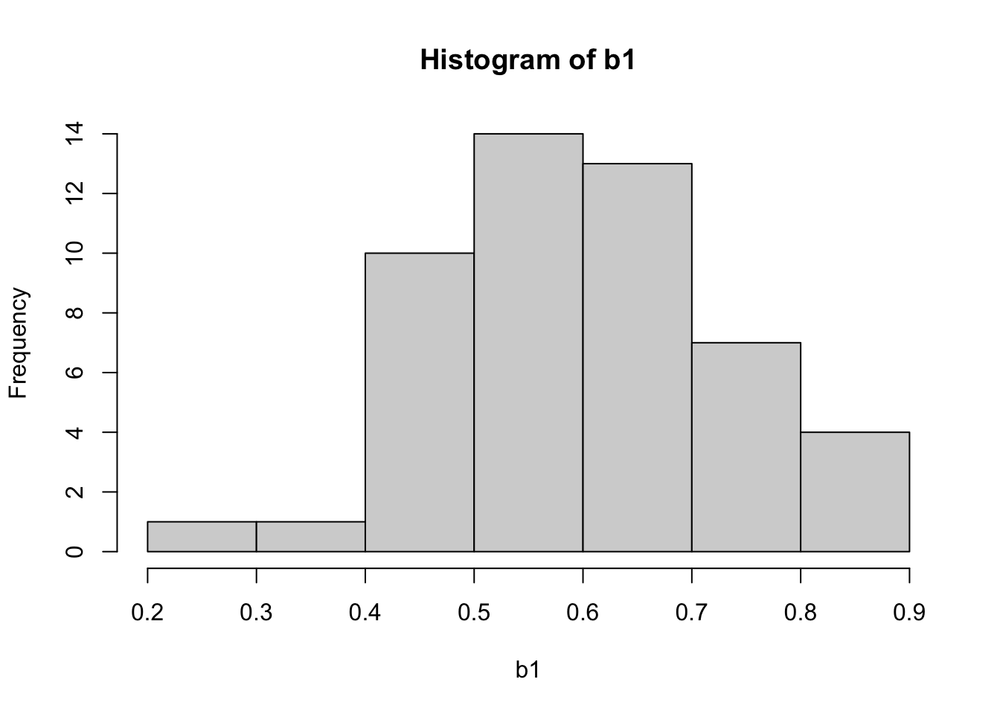
15.3.2 Example: Beta(5,3)
\[f(x) = \frac{1}{Beta(5,3)} x^4 (1-x)^2\]
ReverseCDF <- function(N) {
return(qbeta(runif(N),5,3))
}
b0 <- ReverseCDF(50)
hist(b0, freq = F, ylim = c(0, 2.8))
curve(dbeta(x, 5, 3), add = T)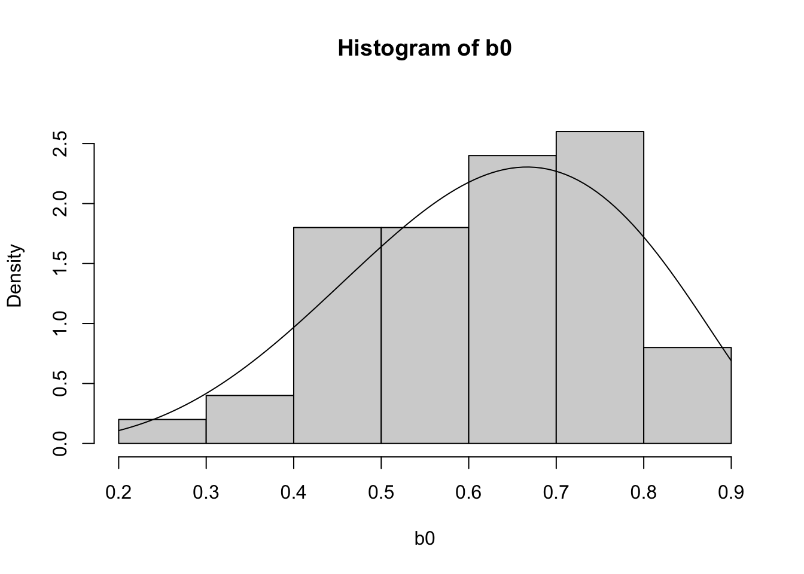
15.4 Acceptance-Rejection Method
You want to generate \(X\sim f_X\) but it’s difficult to do directly.
Assume you have \(Y\sim g_Y\) which is easy to generate, and \[ \frac{f(t)}{g(t)}\leq c, \forall t \text{ s.t. } f(t)>0 \]
Then generate \(u\) from \(U \sim U(0,1)\) and \(y\) from \(Y\sim g_Y\), accept \(y\) if \(u < \frac{f(t)}{c g(t)}\), otherwise drop it.
In some textbooks, \(M = sup \frac{f(t)}{g(t)} < \infty \Rightarrow \frac{f(t)}{Mg(t)}\leq 1\). The \(M\) here is equal to the \(c\) mentioned earlier.
15.4.1 Example: Beta(5,3)
\[f(x) = \frac{1}{Beta(5,3)} x^4 (1-x)^2\]
\[f'(x) = \frac{1}{Beta(5,3)} [4x^3 (1-x)^2 - 2x^4 (1-x)] = \frac{2x^3(1-x)(2-3x)}{Beta(5,3)} \]
Then we have \(M = sup \frac{f(t)}{g(t)} = f(\frac{2}{3})\)
b1 <- rbeta(50, 5,3)
hist(b1, freq = F, ylim = c(0, 2.8))
curve(dbeta(x, 5, 3), add = T)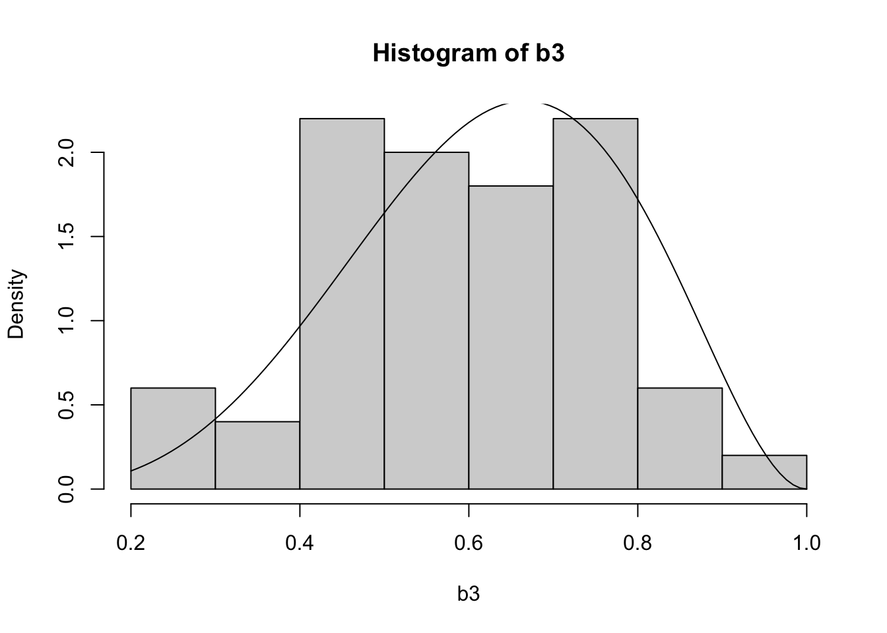
b2 <- c()
M <- dbeta(2/3, 5,3)
while (length(b2) < 50){
u1 <- runif(1)
y <- runif(1)
if(u1 < dbeta(y,5,3)/M){
b2 <- c(b2,y)
}
}
hist(b2, freq = F, ylim = c(0, 2.8))
curve(dbeta(x, 5, 3), add = T)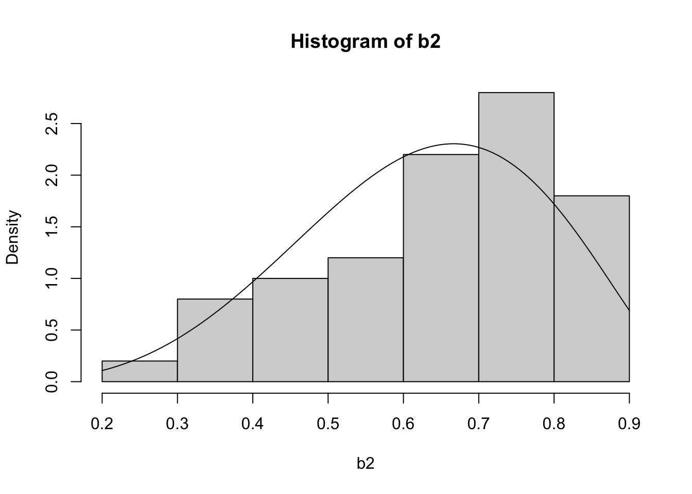
There’re some performance weakness: - bad append operation b2 <- c(b2,y) - non-vectorized operation
Let’s optimize!
N <- 50
M <- dbeta(2/3, 5,3)
N1 <- as.integer(N * M * 1.2)
u <- runif(N1)
y <- runif(N1)
b3 <- y[u < dbeta(y,5,3)/M]
print(paste(c("target is", N, ", and we generated", N1, "finally get", length(b3)), collapse = " "))[1] "target is 50 , and we generated 138 finally get 54"b3 <- b3[1:N]
hist(b3, freq = F, ylim = c(0, 2.8))
curve(dbeta(x, 5, 3), add = T)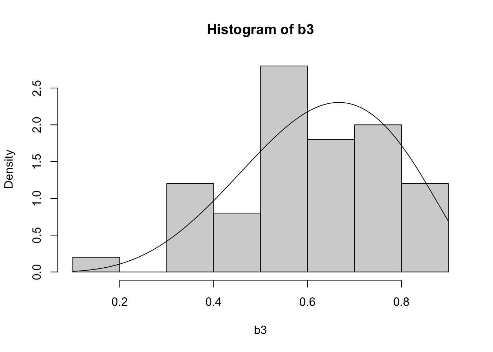
15.4.2 Example: Beta(2,2)
M <- dbeta(0.5,2,2)
mb <- as.integer(m/M * 1.2)
U <- runif(mb)
Y <- runif(mb)
X <- Y[U < dbeta(Y,2,2)/M]
hist(X, freq=F)
curve(dbeta(x,2,2), add = T)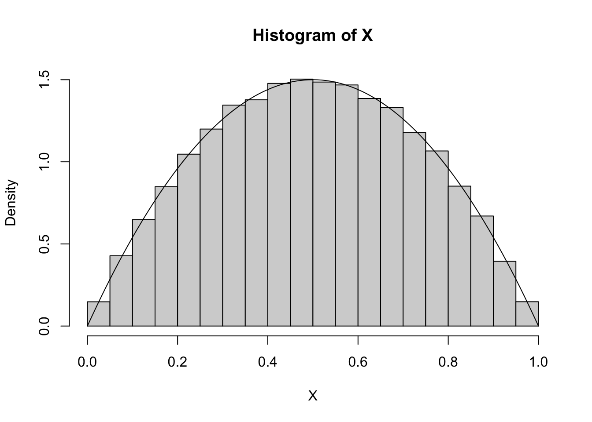
15.5 Transformation Method
iid series \(X_i \sim \Gamma(\alpha_i,\lambda) \\ \implies \frac{\sum_{k=1}^{i}X_k}{\sum_{k=1}^{i+1}X_k}\sim Beta(\sum_{k=1}^{i}\alpha_k,\alpha_{i+1})\) and \(\sum_{k=1}^{n}X_k \sim \Gamma(\sum_{i=1}^{n} \alpha_i,\lambda)\) independent
\[ U,V \stackrel{iid}{\sim} U(0,1) \to \left\{ \begin{array}{cl} Z_1 & = \sqrt{-2\log U}cos{2\pi V} \\ Z_2 & = \sqrt{-2\log V}cos{2\pi U} \end{array}\right., Z_1, Z_2 \stackrel{iid}{\sim} N(0,1) \]
m <- 100000
U1 <- runif(m)
U2 <- runif(m)
X1 <- sqrt(-2*log(U1)) * cos(2 * pi * U2)
X2 <- sqrt(-2*log(U1)) * sin(2 * pi * U2)
cor(X1, X2)[1] 0.00217154par(mfrow = c(1,2))
hist(X1)
hist(X2)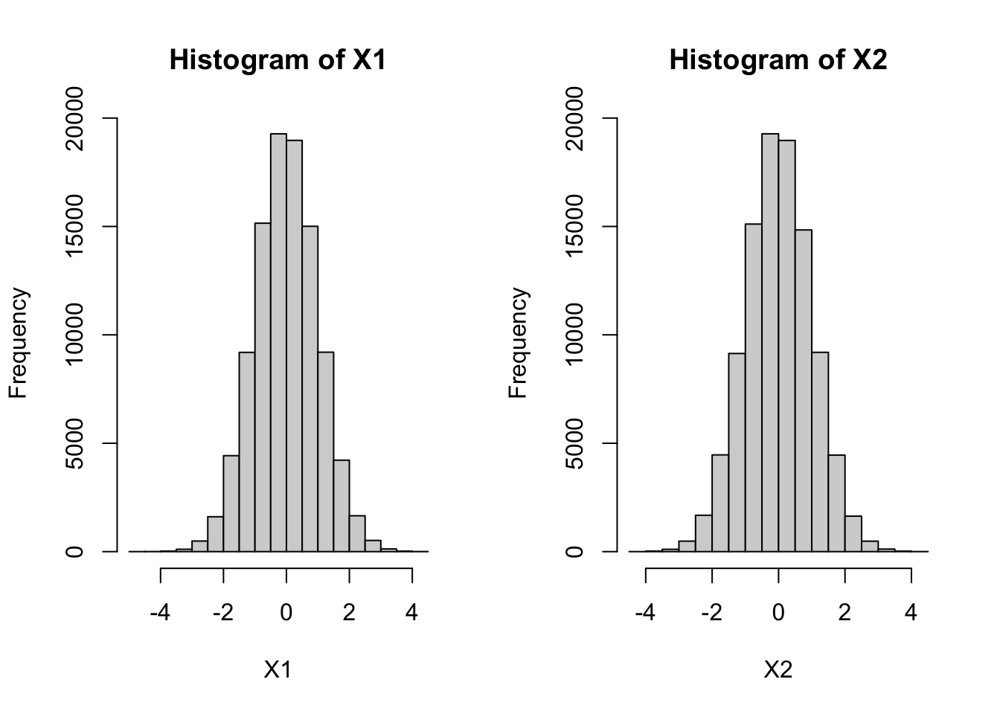
par(mfrow = c(1, 1))15.6 Benchmark
library(microbenchmark)
rejection_scalar <- function(N) {
b2 <- numeric(N)
M <- dbeta(2/3, 5, 3)
count <- 0
while (count < N) {
u1 <- runif(1)
y <- runif(1)
if (u1 < dbeta(y, 5, 3) / M) {
count <- count + 1
b2[count] <- y
}
}
return(b2)
}
rejection_vectorized <- function(N) {
M <- dbeta(2/3, 5,3)
N1 <- as.integer(N * M * 1.2)
u <- runif(N1)
y <- runif(N1)
b3 <- y[u < dbeta(y,5,3)/M]
return(b3[1:N])
}
results <- microbenchmark(
Reverse = ReverseCDF(5000),
Scalar_Loop = rejection_scalar(5000),
Vectorized = rejection_vectorized(5000),
Built_in = rbeta(5000, 5, 3),
times = 100
)Warning in microbenchmark(Reverse = ReverseCDF(5000), Scalar_Loop =
rejection_scalar(5000), : less accurate nanosecond times to avoid potential
integer overflowsresultsUnit: microseconds
expr min lq mean median uq max
Reverse 2008.303 2038.6635 2061.4972 2046.4945 2061.3160 2672.585
Scalar_Loop 11603.451 12070.6255 12502.1689 12330.9140 12843.7830 14743.928
Vectorized 711.719 722.5635 750.7924 728.7135 737.2825 2693.823
Built_in 245.180 251.0430 255.3201 253.1750 256.2705 339.890
neval cld
100 a
100 b
100 c
100 dChi-Square
m = 1000
u1 <- rnorm(m, 0, 1)
u2 <- rnorm(m, 0, 1)
u3 <- rnorm(m, 0, 1)
csq.df3 <- u1^2+u2^2+u3^2
hist(csq.df3, breaks = 30, probability = TRUE, col = "lightblue",
main = "Histogram of 1,000 Chi-Squared Random Variables (df = 3)",
xlab = "Value", ylab = "Density")
curve(dchisq(x, df = 3), add = TRUE, col = "red", lwd = 2)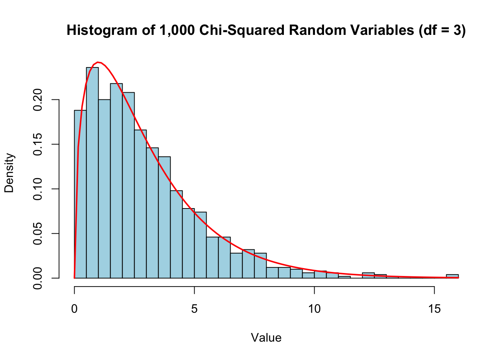
m <- 1000
weights <- c(0.2, 0.5, 0.3)
Y <- sample(1:3, size = m, replace = T, prob = weights)
X <- numeric(m)
for(i in 1:m){
if(Y[i] == 1){
X[i] = rnorm(1)
}else if(Y[i] == 2){
X[i] = rnorm(1,-1,1)
}else{
X[i] = rnorm(1,2,1)
}
}
hist(X, freq = F)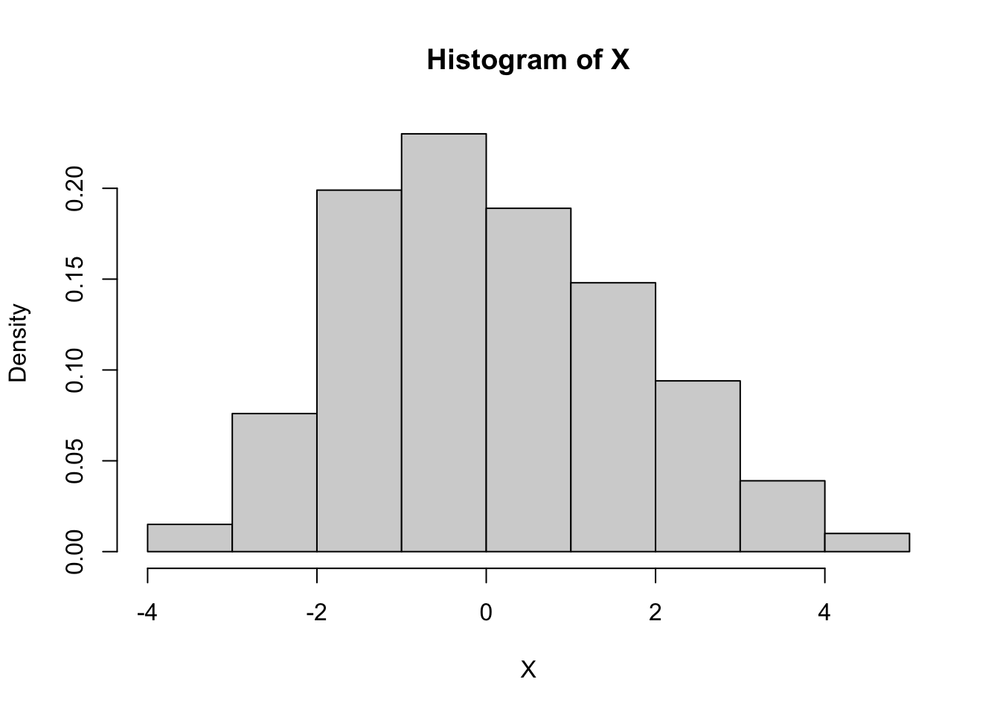
hist(X, breaks = 30, probability = TRUE, col = "lightblue",
# main = "Histogram of 1,000 Chi-Squared Random Variables (df = 3)",
xlab = "Value", ylab = "Density")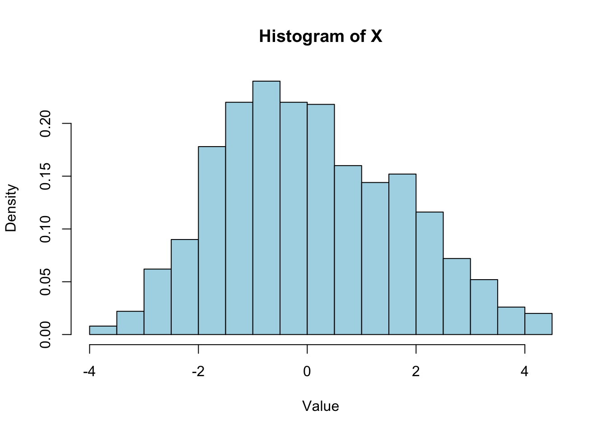
X2 <- numeric(m)
mu <- c(0,-1,2)
for (j in 1:3){
X2[Y==j] = rnorm(sum(Y==j), mu[j])
}
hist(X2, freq = F)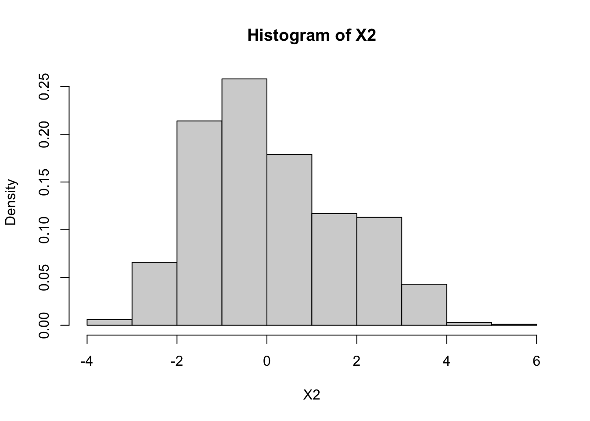
hist(X2, breaks = 30, probability = TRUE, col = "lightblue",
# main = "Histogram of 1,000 Chi-Squared Random Variables (df = 3)",
xlab = "Value", ylab = "Density")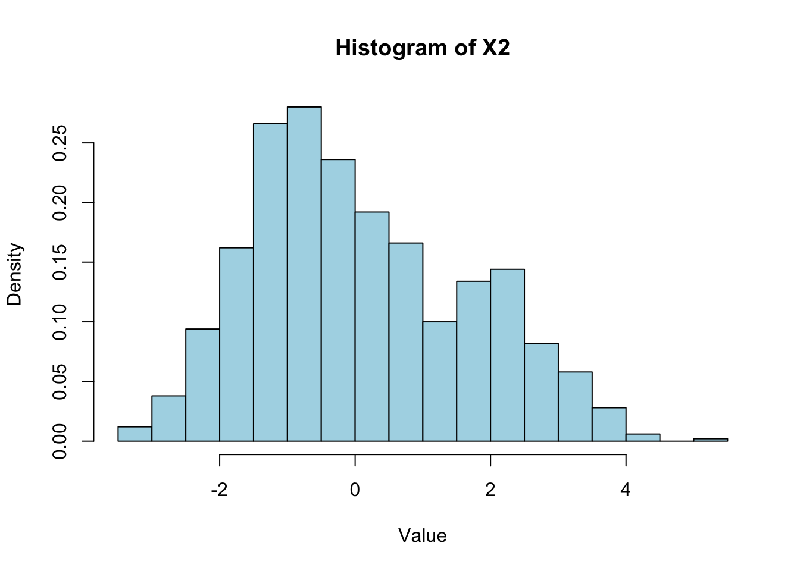
15.7 Multivariate Normal
Generate \(N_p(\mu, \Sigma)\)
with example \(\mu = \begin{bmatrix} 0 \\ 0 \\ 0 \end{bmatrix}\) and \(\Sigma = \begin{bmatrix} 2 & 1 & 1 \\ 1 & 2 & 1 \\ 1 & 1 & 2 \end{bmatrix}\)
\(\Sigma = Q^T Q\) where
We can use eigen decomposition
Here we can also use Cholesky Factorization \(A = L L*\) and L is a lower triangular matrix (in R, chol() returns utm),
\[X = ZQ + J \mu^T\]
\[Var(X) = Var(ZQ + J \mu^T) = Var(ZQ) = Q^T Var(Z) Q = Q^T Q = \Sigma\]
m <- 10000
p <- 3
mu <- matrix(c(0,0,0))
variance <- matrix(c(2,1,1,1,2,1,1,1,2), 3,3)
Z <- matrix(rnorm(m * p), m,p)
Q <- chol(variance)
X <- Z %*% Q + matrix(rep(1,m)) %*% t(mu)
# X
apply(X, 2, mean)[1] 0.034510166 0.009282841 0.004482722cor(X) [,1] [,2] [,3]
[1,] 1.0000000 0.4873324 0.4917051
[2,] 0.4873324 1.0000000 0.4963650
[3,] 0.4917051 0.4963650 1.0000000